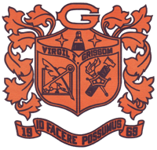

Gather at The Ledges for a Casual Mixer - Stay and visit with everyone or split out with your old crew and enjoy the many new venues Downtown Huntsville has to offer (you can even putt-putt around the Square)!
Light hors d'oeuvres, ice tea & water (provided), cash bar - **The Ledges cannot accept credit cards, so please bring cash for drink purchases**
The Ledges Clubhouse is located at 32 Castle Down Drive in Huntsville.
Join us for a Family Picnic at Southside Park off Chaney Thompson Road in SE Jones Valley - Bring your favorite picnic basket, and if you can a cooler of drinks to share (Coke, Diet Coke, Sprite, and Water). Dessert will be provided by a local bakery!
The park offers archery for kids under 15, please note anyone 16 years and older must have a hunting license which can be obtained online. We have a number of games planned and would love to include your family's favorite picnic games too!
We plan to have the pavilion, but it's always advisable to bring lawn chairs and/or picnic blankets just in case.
Once we're full and exhausted, swing by to get a look at the new school.
Bittersweet for many of us proud to be pod and some double-pod kids; however, it will be cool to see our names carried forward into this century. Before they moved, I visited to make sure our memories were not destroyed. As the Class with the most National Merit Finalists and Semi-Finalists to ever graduate GHS, your pictures remained in the administrative office. They assured me our legacy is not forgotten and the academic achievements remain on display. Too many people to name here, but they want to honor our proud tradition which is good because I was wondering how I could ship folks their pictures and not break the bank. Ha! :-)
* We are still working out the details, so the tour is still TBD as security measures have increased considerably over the last decade; it is not quite as simple as asking for a tour. Please keep your fingers crossed we are able to meet their requirements and include this activity into our weekend.
Cocktail Party at the Alabama Athletic Club located 3250 Leeman Ferry Road in Huntsville
Grab your dancing shoes and come ready to dance the night away to 80s classics! We will have a DJ "spinning" the tunes, a dance floor, Heavy hors'deauvres, sodas, ice tea, and water served, along with a Cash Bar - they DO accept credit cards, at the 3-4 bars stationed throughout the space. We will have the DJ, dance floor as well as a quiet place for conversation and outdoor terrace with fans running to keep us from melting. Other surprises your Reunion Team is working on, excitedly to round out a great weekend of catching up, strolling down amnesia lane, and sharing those memories coming of age together!
If you want to help us put together a living scrapbook, please scan your boxes of pictures from the years we were at GHS 1984-1988, the 10th, 20th, and 25th reunions then email them to me Nicole.Vickery@grissom88.org. If you have huge files, no problem, give me a shout and we can transfer them through my DropBox account!!
Since the 20th reunion, Classmates deleted one of the two listings for Grissom. The original, Grissom High School was simply deleted, not merged with the remaining page and unfortunately gone; so, we are missing close to half the Class there. We have a list circulating to gather email addresses in order to avoid doing all of this legwork in the future.
If you can help us fill in the gaps, please contact Betsy (Elmes) Keller or Mary (Wise) Novelli as these ladies have worked tirelessly to put together our database, along with several other folks on the team.
Any questions or concerns, please feel free to call Nicole Vickery at (256) 694-6272 or email. Join our group on Face Book or the Virgil Grissom High School Class roster at Classmates.com.
Thank you, EVERYONE for your patience! Hopefully, folks can start booking their tickets and we can get a headcount soon in order to have enough food and beverage for you. We cannot wait to see you on July 13!!
- Your GHS 30 Year Reunion Team
